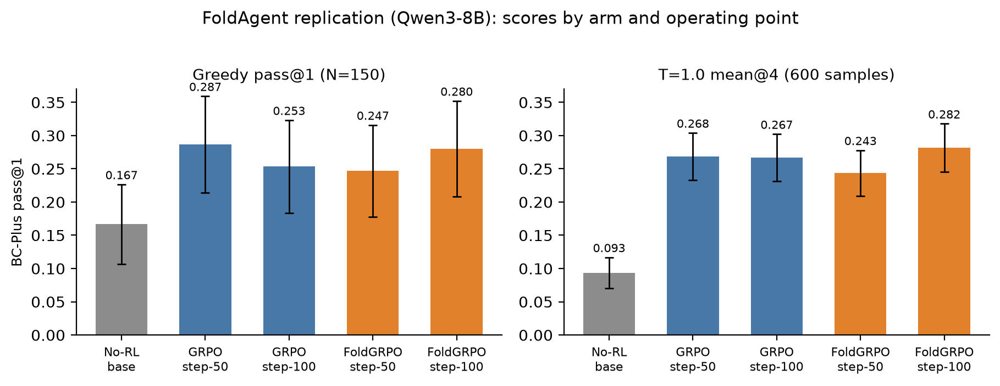
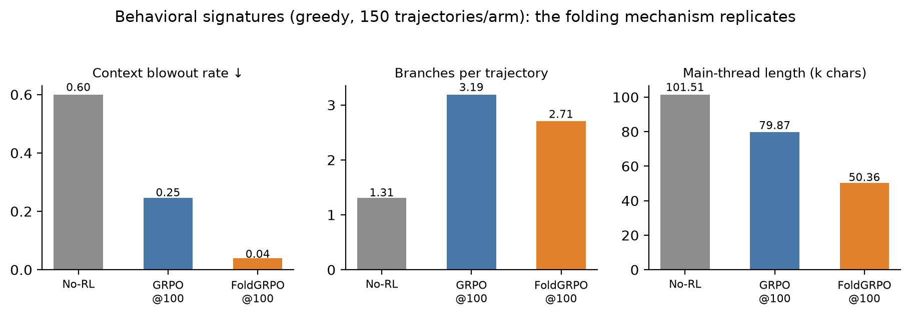

Project: Replication of Sun et al., Scaling Long-Horizon LLM Agent via Context-Folding (arXiv:2510.11967), using the authors' open-source re-implementation (github.com/sunnweiwei/FoldAgent). Dates: 2026-08-05 → 2026-08-11 (SF time). Author: Xiaoxuan Lei (with Claude Code).
The paper trains Seed-OSS-36B with FoldGRPO on BrowseComp-Plus (BC-Plus) and SWE-bench Verified. We replicated the BC-Plus track only (the SWE training environment is not released), substituting:
adv_estimator=grpo, process_reward=none), FoldGRPO (authors' train_bc_qwen3_8b.sh verbatim), 100 steps each.Pre-registered criteria (agreed before launch): (1) directional ordering FoldGRPO > GRPO > no-RL with CIs honestly reported; (2) the paper's Table-2 behavioral signatures (finish rate, main-context compression, branching) — the better-powered tier; (3) a T=1.0 n=4 tier (600 graded samples/arm, CI ≈ ±2.4pts) to supplement greedy pass@1 (N=150, CI ≈ ±4pts). "Mechanism replicates but effect size unresolvable at N=150" was pre-agreed as a legitimate outcome.
Scores are pass@1 on the 150-item BC-Plus test split (50 easy/medium/hard), graded by gpt-oss-120b, measured through the training stack's validation path (see §4 for why standalone serving is invalid for these policies). sc = merged-weights self-contained path, validated against the checkpoint-resume path (0.28 vs 0.267 on the same weights, within noise).
| Model | Greedy pass@1 | T=1.0 mean@4 |
|---|---|---|
| No-RL Qwen3-8B | 0.167 | 0.168 |
| GRPO step-50 | 0.287 | 0.268 |
| GRPO step-100 | 0.253 | 0.267 |
| FoldGRPO step-50 | 0.247 | 0.243 |
| FoldGRPO step-100 | 0.267 / 0.280 | 0.282 |
Training-time validation curve endpoints (same protocol, in-process): no-RL 0.16 → GRPO 0.293 → FoldGRPO 0.34.
Findings:

Computed over all 150 greedy validation trajectories per arm (dumps + val metrics):
| Model | Overlong rate ↓ (context blowout) | Avg branches/traj | Avg main-thread length (chars) | Avg turns |
|---|---|---|---|---|
| No-RL base | 0.51–0.55 | ~1.0 | 24.8k | 13–48 |
| GRPO step-100 | 0.247 | 3.19 | 79.9k | ~16.7 |
| FoldGRPO step-100 | 0.02–0.04 | 2.78 | 50.8k | ~16.0 |

The RL'd checkpoints score catastrophically lower when served via a standard OpenAI-style /chat/completions endpoint (step-50: 0.027; step-100: 0.093) than through the training stack's token-in-token-out path (0.247 / 0.267) — while the base model is unaffected (0.147 standalone ≈ 0.16 training-val). Cause: per-turn chat re-templating drops prior-turn reasoning (<think>) content that token-level continuation preserves; the RL'd policies came to depend on it (outputs remain coherent but trajectories shorten from ~17 to ~4 turns). Implication: deployment serving must match training serving for context-folding agents — a practical caveat absent from the paper. All reported numbers therefore use the training-stack validation path for every arm.
max_tokens duplication, missing rollout logprobs (needed for FoldGRPO's importance ratios), pydantic class identity, validation is_train flag. Plus one eval-path crash fix and a None-guard. The training hyperparameters are the authors' script verbatim.At 8B scale with the released re-implementation: the context-folding mechanism and its RL-driven emergence replicate clearly — large RL gains, learned context management (25× lower blowout rate than GRPO), active branching, and main-thread compression. The FoldGRPO-over-GRPO scoring advantage does not replicate: the arms tie at greedy and GRPO wins under sampling, where FoldGRPO's process-reward-sharpened policy proves temperature-fragile. Two practical contributions beyond the replication verdict: the serving-path sensitivity of folded-context policies (§4), and a working patch set for the public re-implementation (§5).
~/xiaoxuan/FoldAgent (local git; commits a6c0a21…af8c4c3).infra/worker_train.sh (ARM/STEPS); evals: infra/worker_val_only.sh, infra/worker_val_selfcontained.sh; infra: infra/worker_infra.sh, infra/judge_shim.py.results/valonly_*/ (logs, val metrics, trajectory dumps, judge audit logs); aggregate: report/results.json via report/collect_results.py./mnt/hdfs/mlsys/xiaoxuan/fold_replication/ckpt/{foldgrpo,grpo}/global_step_{10..100} (HDFS-verified).